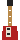

NIRVANA
Media
Listen
Nirvana on Spotify
nirvana.com — official site
Video
official music videos — now playing
Photos
free photos from Wikimedia Commons — click a picture for its source page
 Kurt Cobain Memorial Park, Aberdeen |
 Under the Young Street Bridge — from "Something in the Way" |
 Hard Rock Cafe Seattle sign — "Smells Like Teen Spirit" |
 Kurt Cobain |
Our own pixel art


original pixel art, drawn for this page — the portrait, the guitar, the angel, the heart
Last updated: 04/10/94
[ prev · home · next ]
Nirvana Memorial Web Ring
© 1994 · in memory of Kurt Cobain